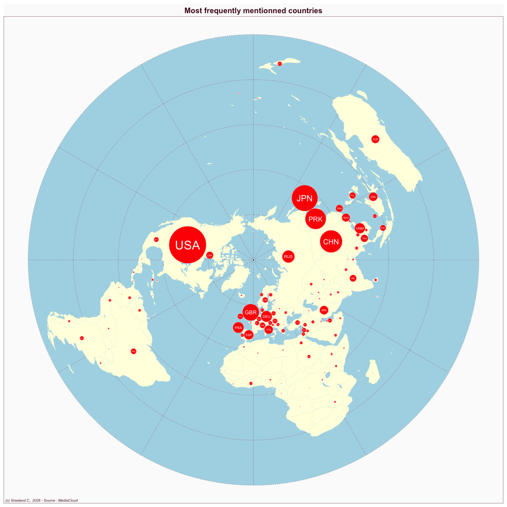

South Korea
- Website : Kyunghyang Shinmun
Scale
- Global
- National
Topics
- General news
- Political news
- Economic news
Publications
Moon M. 2019. International news coverage of the korean conflict. In International News Coverage and the Korean Conflict: The Challenges of Reporting PracticesSpringer; 111–127.